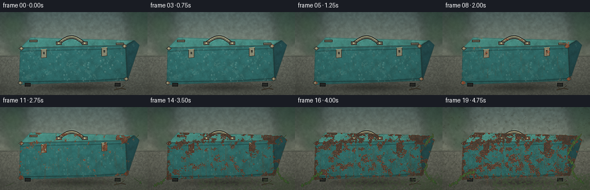
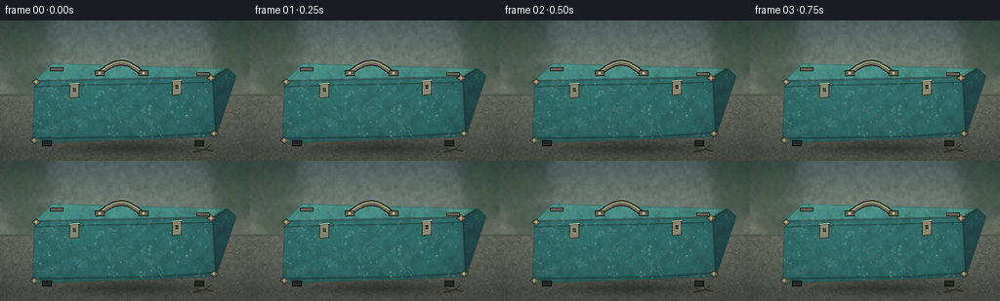

CODING AGENTS AS PIXEL WORLD MODELS
traex/DeepSeek-V4.1-Flash · material_0049
点击播放 · 原生 RGB 像素
逐轮保存的候选
回放视频、检查图与代码变化。
每份候选均可单独播放。实际图片检查记录在下方工具轨迹中。
候选 01播放与检查图
点击播放 · 原生 RGB 像素


展开代码变化
--- 上一保存版本
+++ 本次保存版本
@@ -0,0 +1,665 @@
+"""Procedural timelapse of an outdoor metal toolbox weathering over years."""
+
+from pathlib import Path
+
+import numpy as np
+from PIL import Image, ImageDraw, ImageFilter
+
+import artifact_io
+
+
+ROOT = Path(__file__).resolve().parent
+W, H = 256, 144
+N, FPS = 20, 4.0
+SS = 4
+IW, IH = W * SS, H * SS
+RNG = np.random.default_rng(4917)
+
+
+def P(points):
+ return [(int(round(x * SS)), int(round(y * SS))) for x, y in points]
+
+
+def smoothstep(a, b, x):
+ q = np.clip((x - a) / max(b - a, 1e-6), 0.0, 1.0)
+ return q * q * (3.0 - 2.0 * q)
+
+
+def resize_float(values, size=(IW, IH), method=Image.Resampling.BICUBIC):
+ array = np.clip(values * 255.0, 0, 255).astype(np.uint8)
+ return np.asarray(Image.fromarray(array).resize(size, method), dtype=np.float32) / 255.0
+
+
+def noise_field(scale, seed, octaves=5, persistence=0.52):
+ """Fractal value noise, generated locally with numpy and PIL resampling."""
+ rng = np.random.default_rng(seed)
+ total = np.zeros((IH, IW), dtype=np.float32)
+ weight_sum = 0.0
+ amplitude = 1.0
+ for octave in range(octaves):
+ cell = max(2.0, scale / (2.0**octave))
+ low_w = max(2, int(np.ceil(IW / cell)) + 2)
+ low_h = max(2, int(np.ceil(IH / cell)) + 2)
+ field = rng.random((low_h, low_w), dtype=np.float32)
+ total += amplitude * resize_float(field)
+ weight_sum += amplitude
+ amplitude *= persistence
+ total /= weight_sum
+ lo, hi = np.percentile(total, (1.0, 99.0))
+ return np.clip((total - lo) / max(hi - lo, 1e-6), 0.0, 1.0)
+
+
+def polygon_mask(points, blur=0.0, expand=0):
+ mask = Image.new("L", (IW, IH), 0)
+ draw = ImageDraw.Draw(mask)
+ scaled = P(points)
+ draw.polygon(scaled, fill=255)
+ if expand:
+ for offset in range(1, expand + 1):
+ draw.line(scaled + [scaled[0]], fill=255, width=offset * 2, joint="curve")
+ if blur:
+ mask = mask.filter(ImageFilter.GaussianBlur(blur))
+ return np.asarray(mask, dtype=np.float32) / 255.0
+
+
+def line_mask(points, width=1, blur=0.0):
+ mask = Image.new("L", (IW, IH), 0)
+ draw = ImageDraw.Draw(mask)
+ draw.line(P(points), fill=255, width=max(1, int(width * SS)), joint="curve")
+ if blur:
+ mask = mask.filter(ImageFilter.GaussianBlur(blur))
+ return np.asarray(mask, dtype=np.float32) / 255.0
+
+
+def composite(base, layer, alpha):
+ a = np.clip(alpha, 0.0, 1.0)[..., None]
+ return base * (1.0 - a) + layer * a
+
+
+def colorize(mask, color, strength=1.0):
+ rgb = np.empty((IH, IW, 3), dtype=np.float32)
+ rgb[:] = np.asarray(color, dtype=np.float32)
+ return composite(np.zeros_like(rgb), rgb, mask * strength)
+
+
+def blend_rgb(base, color, alpha):
+ rgb = np.empty_like(base)
+ rgb[:] = np.asarray(color, dtype=np.float32)
+ return composite(base, rgb, alpha)
+
+
+def radial_spot(cx, cy, rx, ry):
+ yy, xx = np.mgrid[0:IH, 0:IW].astype(np.float32)
+ distance = ((xx - cx * SS) / (rx * SS)) ** 2 + ((yy - cy * SS) / (ry * SS)) ** 2
+ return np.exp(-distance * 2.1).astype(np.float32)
+
+
+def draw_polyline_layer(draw_fn):
+ layer = Image.new("RGBA", (IW, IH), (0, 0, 0, 0))
+ draw = ImageDraw.Draw(layer)
+ draw_fn(draw)
+ return layer
+
+
+def add_shadow(img, center, radii, alpha):
+ x, y = center
+ yy, xx = np.mgrid[0:IH, 0:IW].astype(np.float32)
+ rx, ry = radii
+ d = ((xx - x * SS) / (rx * SS)) ** 2 + ((yy - y * SS) / (ry * SS)) ** 2
+ shadow = np.exp(-2.4 * d) * alpha
+ shadow = np.asarray(
+ Image.fromarray((np.clip(shadow, 0, 1) * 255).astype(np.uint8)).filter(
+ ImageFilter.GaussianBlur(2.2 * SS)
+ ),
+ dtype=np.float32,
+ ) / 255.0
+ return img * (1.0 - shadow[..., None] * 0.68)
+
+
+def build_background():
+ yy, xx = np.mgrid[0:IH, 0:IW].astype(np.float32)
+ xn, yn = xx / IW, yy / IH
+ img = np.empty((IH, IW, 3), dtype=np.float32)
+
+ # Humid, overcast garden wall.
+ wall_t = np.clip(yn / 0.54, 0, 1)[..., None]
+ wall_top = np.asarray((83, 104, 100), dtype=np.float32)
+ wall_bottom = np.asarray((125, 130, 112), dtype=np.float32)
+ wall = wall_top * (1 - wall_t) + wall_bottom * wall_t
+ img[:] = wall
+
+ # Fine plaster and mineral staining.
+ plaster = noise_field(15, 11, octaves=6)
+ broad = noise_field(52, 12, octaves=4)
+ stain = smoothstep(0.56, 0.86, broad) * (0.28 + 0.72 * np.clip(yn / 0.58, 0, 1))
+ img = composite(img, np.full_like(img, (73, 83, 71), dtype=np.float32), stain * 0.28)
+ img *= (0.92 + 0.16 * plaster[..., None])
+
+ # Out-of-focus leaves frame the wall without competing with the toolbox.
+ foliage = Image.new("RGBA", (IW, IH), (0, 0, 0, 0))
+ fd = ImageDraw.Draw(foliage)
+ for i in range(28):
+ side = -1 if i % 2 == 0 else 1
+ cx = (7 + RNG.uniform(0, 32)) if side < 0 else (226 + RNG.uniform(0, 28))
+ cy = RNG.uniform(2, 72)
+ rx = RNG.uniform(7, 21)
+ ry = RNG.uniform(4, 12)
+ col = tuple(int(v) for v in RNG.choice(
+ [(41, 72, 53), (52, 81, 55), (66, 92, 62), (35, 65, 50)]
+ ))
+ fd.ellipse(
+ ((cx - rx) * SS, (cy - ry) * SS, (cx + rx) * SS, (cy + ry) * SS),
+ fill=(*col, RNG.integers(105, 185)),
+ )
+ foliage = foliage.filter(ImageFilter.GaussianBlur(7.5 * SS))
+ fg = np.asarray(foliage, dtype=np.float32) / 255.0
+ img = img * (1 - fg[..., 3:4]) + fg[..., :3] * 255.0 * fg[..., 3:4]
+
+ # Concrete bench / ledge.
+ table_mask = smoothstep(0.515, 0.535, yn)
+ concrete_noise = noise_field(8, 21, octaves=6)
+ grit = noise_field(3, 22, octaves=3)
+ table = np.empty_like(img)
+ table[:] = np.asarray((102, 105, 92), dtype=np.float32)
+ table *= (0.77 + 0.24 * concrete_noise[..., None] + 0.08 * grit[..., None])
+ table *= (1.02 - 0.18 * np.clip((yn - 0.53) / 0.5, 0, 1)[..., None])
+ img = composite(img, table, table_mask)
+
+ # Damp ledge edge and a few stone joints.
+ edge_y = 0.532
+ edge = np.exp(-((yn - edge_y) / 0.007) ** 2)
+ img = blend_rgb(img, (60, 66, 57), edge * 0.48)
+ joint = np.exp(-((yn - 0.585) / 0.0028) ** 2) * 0.32
+ img = blend_rgb(img, (68, 72, 62), joint)
+
+ # Old damp streaks descending from the wall.
+ streak_img = Image.new("L", (IW, IH), 0)
+ sd = ImageDraw.Draw(streak_img)
+ for _ in range(24):
+ x = RNG.uniform(0, W)
+ y0 = RNG.uniform(4, 34)
+ length = RNG.uniform(12, 49)
+ sd.line(
+ ((x * SS, y0 * SS), ((x + RNG.uniform(-2, 2)) * SS, (y0 + length) * SS)),
+ fill=int(RNG.uniform(20, 55)),
+ width=int(RNG.uniform(1, 3) * SS),
+ )
+ streak_img = streak_img.filter(ImageFilter.GaussianBlur(1.2 * SS))
+ streak = np.asarray(streak_img, dtype=np.float32) / 255.0
+ img = blend_rgb(img, (54, 68, 54), streak * 0.45)
+
+ # Soft shadows ground the bench and the toolbox.
+ img = add_shadow(img, (128, 131), (107, 8), 0.56)
+ img = add_shadow(img, (137, 127), (99, 21), 0.31)
+
+ # A little broken twig gives the surface scale.
+ twig = draw_polyline_layer(lambda d: (
+ d.line(P([(198, 135), (210, 132), (218, 134)]), fill=(54, 47, 35, 255), width=2 * SS),
+ d.line(P([(210, 132), (216, 127)]), fill=(54, 47, 35, 255), width=1 * SS),
+ d.line(P([(204, 134), (201, 130)]), fill=(54, 47, 35, 255), width=1 * SS),
+ ))
+ tg = np.asarray(twig, dtype=np.float32) / 255.0
+ img = img * (1 - tg[..., 3:4]) + tg[..., :3] * 255.0 * tg[..., 3:4]
+ return img
+
+
+FRONT = [(35, 62), (218, 58), (221, 119), (33, 126)]
+TOP = [(53, 44), (233, 49), (218, 58), (35, 62)]
+SIDE = [(233, 49), (242, 57), (221, 119), (218, 58)]
+
+
+def build_toolbox(img):
+ masks = {
+ "front": polygon_mask(FRONT, blur=0.55 * SS),
+ "top": polygon_mask(TOP, blur=0.55 * SS),
+ "side": polygon_mask(SIDE, blur=0.55 * SS),
+ }
+ box_mask = np.clip(masks["front"] + masks["top"] + masks["side"], 0, 1)
+ broad = noise_field(28, 31, octaves=5)
+ fine = noise_field(6, 32, octaves=4)
+ micro = noise_field(2.2, 33, octaves=3)
+ yy, xx = np.mgrid[0:IH, 0:IW].astype(np.float32)
+
+ # Enamel faces with a top-left light and a darker side plane.
+ face_colors = {
+ "front": (39, 104, 100),
+ "top": (62, 133, 121),
+ "side": (26, 70, 72),
+ }
+ for name, mask in masks.items():
+ base = np.empty_like(img)
+ base[:] = np.asarray(face_colors[name], dtype=np.float32)
+ shade = 0.90 + 0.15 * (1.0 - yy / IH) - 0.08 * xx / IW
+ base *= shade[..., None]
+ base *= (0.89 + 0.18 * broad[..., None] + 0.08 * fine[..., None])
+ img = composite(img, base, mask)
+
+ # Paint edge darkening and enamel highlights.
+ rim = np.clip(
+ line_mask(FRONT + [FRONT[0]], 1.0, 0.7 * SS)
+ + line_mask(TOP + [TOP[0]], 1.0, 0.7 * SS)
+ + line_mask(SIDE + [SIDE[0]], 1.0, 0.7 * SS),
+ 0,
+ 1,
+ ) * box_mask
+ img = blend_rgb(img, (16, 44, 43), rim * 0.72)
+
+ # Broad worn highlights along the lid and upper front lip.
+ lid_hl = line_mask([(43, 62), (109, 60), (176, 59), (216, 58)], 1.2, 0.9 * SS) * masks["front"]
+ img = blend_rgb(img, (103, 164, 145), lid_hl * 0.34)
+ top_hl = line_mask([(62, 46), (127, 48), (193, 49), (228, 51)], 1.0, 1.1 * SS) * masks["top"]
+ img = blend_rgb(img, (131, 183, 159), top_hl * 0.42)
+
+ # Lid seam, lower lip, pressed panel lines.
+ seam = line_mask([(35, 68), (91, 66), (154, 65), (219, 63)], 1.35, 0.45 * SS)
+ img = blend_rgb(img, (14, 45, 44), seam * 0.76)
+ seam_hi = line_mask([(35, 66.7), (91, 64.8), (154, 63.8), (219, 61.8)], 0.65, 0.55 * SS)
+ img = blend_rgb(img, (87, 145, 130), seam_hi * 0.38)
+ lip = line_mask([(34, 121), (91, 120), (156, 119), (220, 115)], 1.5, 0.65 * SS)
+ img = blend_rgb(img, (11, 38, 38), lip * 0.78)
+ panel = line_mask([(46, 79), (49, 111), (95, 109), (92, 77), (46, 79)], 0.72, 0.4 * SS)
+ img = blend_rgb(img, (25, 74, 72), panel * 0.37)
+ panel_hi = line_mask([(47.2, 78), (50.2, 110), (95, 108)], 0.55, 0.55 * SS)
+ img = blend_rgb(img, (82, 139, 125), panel_hi * 0.29)
+
+ # Scratches are part of the history, and become rust nucleation sites.
+ scratch_img = Image.new("L", (IW, IH), 0)
+ sd = ImageDraw.Draw(scratch_img)
+ scratch_list = []
+ for _ in range(36):
+ x0 = RNG.uniform(45, 211)
+ y0 = RNG.uniform(69, 118)
+ length = RNG.uniform(2, 14)
+ slope = RNG.uniform(-0.24, 0.18)
+ x1, y1 = x0 + length, y0 + slope * length
+ scratch_list.append((x0, y0, x1, y1))
+ sd.line(
+ ((x0 * SS, y0 * SS), (x1 * SS, y1 * SS)),
+ fill=int(RNG.uniform(35, 100)),
+ width=max(1, int(RNG.uniform(0.55, 1.2) * SS)),
+ )
+ scratch_img = scratch_img.filter(ImageFilter.GaussianBlur(0.35 * SS))
+ scratches = np.asarray(scratch_img, dtype=np.float32) / 255.0 * masks["front"]
+ img = blend_rgb(img, (101, 145, 131), scratches * 0.23)
+
+ # Hardware: latches, corner guards, hinges, rivets and handle.
+ hard = Image.new("RGBA", (IW, IH), (0, 0, 0, 0))
+ hd = ImageDraw.Draw(hard)
+ for latch_x, latch_top in ((76, 64), (181, 61)):
+ pts = P([
+ (latch_x - 5, latch_top + 1),
+ (latch_x + 5, latch_top),
+ (latch_x + 5, latch_top + 15),
+ (latch_x - 5, latch_top + 16),
+ ])
+ hd.polygon(pts, fill=(128, 125, 99, 255), outline=(50, 49, 40, 255), width=SS)
+ hd.line([pts[0], pts[1]], fill=(192, 184, 137, 255), width=SS)
+ hd.rectangle(
+ ((latch_x - 1.3) * SS, (latch_top + 5) * SS, (latch_x + 1.5) * SS, (latch_top + 9) * SS),
+ fill=(47, 45, 38, 255),
+ )
+ for cx, cy in ((37, 63), (216, 59), (35, 123), (219, 116)):
+ hd.polygon(
+ P([(cx - 5, cy), (cx, cy - 4), (cx + 5, cy), (cx, cy + 4)]),
+ fill=(111, 107, 86, 255),
+ outline=(47, 47, 40, 255),
+ width=SS,
+ )
+ hd.ellipse(
+ ((cx - 1.2) * SS, (cy - 1.2) * SS, (cx + 1.2) * SS, (cy + 1.2) * SS),
+ fill=(188, 176, 127, 255),
+ )
+ for hx, hy in ((58, 49), (208, 54)):
+ hd.rectangle(
+ ((hx - 7) * SS, (hy - 1) * SS, (hx + 7) * SS, (hy + 3) * SS),
+ fill=(92, 93, 76, 255),
+ outline=(42, 43, 36, 255),
+ width=SS,
+ )
+
+ # Rounded, slightly perspectival carry handle.
+ handle_pts = []
+ for q in np.linspace(0, 1, 23):
+ x = 103 + 43 * q
+ y = 53 - 10.5 * np.sin(np.pi * q) + 1.3 * q
+ handle_pts.append((x, y))
+ hp = P(handle_pts)
+ hd.line(hp, fill=(31, 31, 28, 255), width=6 * SS, joint="curve")
+ hd.line(hp, fill=(96, 97, 79, 255), width=4 * SS, joint="curve")
+ hd.line([(x, y - 0.8 * SS) for x, y in hp], fill=(168, 159, 116, 255), width=SS, joint="curve")
+ for mx, my in ((102, 54), (147, 54)):
+ hd.rectangle(
+ ((mx - 5) * SS, (my - 3) * SS, (mx + 5) * SS, (my + 3) * SS),
+ fill=(88, 87, 71, 255),
+ outline=(40, 39, 34, 255),
+ width=SS,
+ )
+ hd.ellipse(
+ ((mx - 1.3) * SS, (my - 1.3) * SS, (mx + 1.3) * SS, (my + 1.3) * SS),
+ fill=(178, 166, 120, 255),
+ )
+ hard_arr = np.asarray(hard, dtype=np.float32) / 255.0
+ img = img * (1 - hard_arr[..., 3:4]) + hard_arr[..., :3] * 255.0 * hard_arr[..., 3:4]
+ metal_mask = hard_arr[..., 3] * 0.85
+
+ # Feet.
+ feet = Image.new("RGBA", (IW, IH), (0, 0, 0, 0))
+ fd = ImageDraw.Draw(feet)
+ for x in (48, 204):
+ fd.rectangle(
+ ((x - 5) * SS, 123 * SS, (x + 5) * SS, 129 * SS),
+ fill=(32, 34, 31, 255),
+ outline=(12, 15, 15, 255),
+ width=SS,
+ )
+ feet_arr = np.asarray(feet, dtype=np.float32) / 255.0
+ img = img * (1 - feet_arr[..., 3:4]) + feet_arr[..., :3] * 255.0 * feet_arr[..., 3:4]
+ return img, masks, box_mask, scratches, metal_mask
+
+
+def make_edge_field(box_mask):
+ edge = Image.new("L", (IW, IH), 0)
+ ed = ImageDraw.Draw(edge)
+ for poly in (FRONT, TOP, SIDE):
+ ed.line(P(poly + [poly[0]]), fill=255, width=2 * SS, joint="curve")
+ edge = edge.filter(ImageFilter.GaussianBlur(2.4 * SS))
+ edge = np.asarray(edge, dtype=np.float32) / 255.0
+ return edge * box_mask
+
+
+def build_static_fields():
+ broad = noise_field(31, 71, octaves=5)
+ medium = noise_field(10, 72, octaves=5)
+ fine = noise_field(3.2, 73, octaves=4)
+ micro = noise_field(1.6, 74, octaves=3)
+ chips = noise_field(4.4, 75, octaves=5)
+ moss = noise_field(18, 76, octaves=5)
+ return broad, medium, fine, micro, chips, moss
+
+
+def rust_streak_mask(progress):
+ layer = Image.new("L", (IW, IH), 0)
+ d = ImageDraw.Draw(layer)
+ rng = np.random.default_rng(809)
+ for _ in range(58):
+ x = rng.uniform(40, 215)
+ y = rng.uniform(64, 99)
+ max_len = rng.uniform(10, 48)
+ length = max_len * (0.08 + 0.92 * progress) * rng.uniform(0.55, 1.0)
+ width = max(1, int(rng.uniform(0.45, 1.35) * SS))
+ shade = int(rng.uniform(65, 160))
+ d.line(
+ ((x * SS, y * SS), ((x + rng.uniform(-1.2, 1.2)) * SS, (y + length) * SS)),
+ fill=shade,
+ width=width,
+ )
+ if rng.random() < 0.55:
+ d.ellipse(
+ (
+ (x - 0.9) * SS,
+ (y + length - 1.0) * SS,
+ (x + 0.9) * SS,
+ (y + length + 1.0) * SS,
+ ),
+ fill=shade,
+ )
+ layer = layer.filter(ImageFilter.GaussianBlur(0.55 * SS))
+ return np.asarray(layer, dtype=np.float32) / 255.0
+
+
+def runoff_on_bench(progress):
+ layer = Image.new("L", (IW, IH), 0)
+ d = ImageDraw.Draw(layer)
+ rng = np.random.default_rng(1003)
+ for _ in range(24):
+ x = rng.uniform(48, 209)
+ start = rng.uniform(124, 128)
+ length = rng.uniform(4, 17) * (0.1 + 0.9 * progress)
+ d.line(
+ ((x * SS, start * SS), ((x + rng.uniform(-1.5, 1.5)) * SS, (start + length) * SS)),
+ fill=int(rng.uniform(45, 95)),
+ width=max(1, int(rng.uniform(0.7, 1.8) * SS)),
+ )
+ layer = layer.filter(ImageFilter.GaussianBlur(1.0 * SS))
+ return np.asarray(layer, dtype=np.float32) / 255.0
+
+
+def add_droplets(img, amount):
+ if amount <= 0.01:
+ return img
+ layer = Image.new("RGBA", (IW, IH), (0, 0, 0, 0))
+ d = ImageDraw.Draw(layer)
+ rng = np.random.default_rng(207)
+ for _ in range(66):
+ x = rng.uniform(38, 216)
+ y = rng.uniform(61, 120)
+ r = rng.uniform(0.45, 1.45)
+ a = int(255 * amount * rng.uniform(0.35, 0.88))
+ d.ellipse(
+ ((x - r) * SS, (y - r * 1.2) * SS, (x + r) * SS, (y + r * 1.2) * SS),
+ fill=(84, 133, 127, a),
+ outline=(173, 200, 180, min(255, a + 20)),
+ width=max(1, int(0.35 * SS)),
+ )
+ d.ellipse(
+ ((x - r * 0.48) * SS, (y - r * 0.7) * SS, (x + r * 0.02) * SS, (y - r * 0.05) * SS),
+ fill=(211, 226, 206, min(255, a + 20)),
+ )
+ arr = np.asarray(layer, dtype=np.float32) / 255.0
+ return img * (1 - arr[..., 3:4] * 0.82) + arr[..., :3] * 255.0 * arr[..., 3:4] * 0.82
+
+
+def add_rain(img, amount, frame):
+ if amount <= 0.01:
+ return img
+ layer = Image.new("RGBA", (IW, IH), (0, 0, 0, 0))
+ d = ImageDraw.Draw(layer)
+ rng = np.random.default_rng(310)
+ for _ in range(31):
+ x = rng.uniform(-5, W + 5)
+ y = rng.uniform(0, H)
+ length = rng.uniform(4, 13)
+ x += (frame % 3) * 0.55
+ y = (y + frame * 3.7) % (H + 12) - 6
+ d.line(
+ ((x * SS, y * SS), ((x - 0.8) * SS, (y + length) * SS)),
+ fill=(179, 200, 196, int(42 * amount)),
+ width=max(1, int(0.35 * SS)),
+ )
+ arr = np.asarray(layer, dtype=np.float32) / 255.0
+ return img * (1 - arr[..., 3:4]) + arr[..., :3] * 255.0 * arr[..., 3:4]
+
+
+def add_moss_and_vines(img, progress):
+ if progress <= 0.01:
+ return img
+ # Algae creeps up from the damp lower edge and into the corners.
+ yy, xx = np.mgrid[0:IH, 0:IW].astype(np.float32)
+ yn = yy / IH
+ lower = smoothstep(0.72, 0.93, yn)
+ left = smoothstep(0.34, 0.12, xx / IW) * smoothstep(0.58, 0.90, yn)
+ right = smoothstep(0.74, 0.94, xx / IW) * smoothstep(0.62, 0.91, yn)
+ moss_pattern = 0.50 * noise_field(10, 121 + int(progress * 5), octaves=4) + 0.28 * lower + 0.20 * left + 0.18 * right
+ moss_mask = smoothstep(0.64, 0.84, moss_pattern) * progress
+ img = blend_rgb(img, (59, 82, 48), moss_mask * 0.62)
+
+ if progress < 0.12:
+ return img
+ layer = Image.new("RGBA", (IW, IH), (0, 0, 0, 0))
+ d = ImageDraw.Draw(layer)
+ paths = [
+ [(246, 133), (232, 123), (225, 111), (229, 101), (219, 91)],
+ [(10, 137), (25, 131), (33, 121), (44, 115), (55, 113)],
+ [(241, 48), (232, 57), (224, 68), (218, 81)],
+ ]
+ leaf_spots = []
+ for path_index, path in enumerate(paths):
+ count = max(2, int((len(path) - 1) * 12))
+ for j in range(count):
+ q0 = j / count
+ q1 = min(1.0, (j + 1) / count)
+ if q1 > progress:
+ break
+ a = np.asarray(path[min(int(q0 * (len(path) - 1)), len(path) - 2)], dtype=float)
+ b = np.asarray(path[min(int(q0 * (len(path) - 1)) + 1, len(path) - 1)], dtype=float)
+ p0 = a * (1 - (q0 * (len(path) - 1)) % 1) + b * ((q0 * (len(path) - 1)) % 1)
+ p1 = a * (1 - (q1 * (len(path) - 1)) % 1) + b * ((q1 * (len(path) - 1)) % 1)
+ d.line(
+ ((p0[0] * SS, p0[1] * SS), (p1[0] * SS, p1[1] * SS)),
+ fill=(48, 70, 37, 255),
+ width=max(1, int(0.85 * SS)),
+ )
+ if j % 3 == 1 and progress > 0.24:
+ leaf_spots.append((p1[0], p1[1], path_index, j))
+
+ for idx, (x, y, path_index, j) in enumerate(leaf_spots):
+ if idx / max(1, len(leaf_spots)) > smoothstep(0.16, 1.0, progress):
+ continue
+ angle = 0.55 * np.sin(idx * 1.7 + progress * 4.0)
+ length = 2.4 + 1.6 * (idx % 3) / 2
+ width = 1.15 + 0.55 * (idx % 2)
+ ca, sa = np.cos(angle), np.sin(angle)
+ pts = []
+ for theta in np.linspace(0, 2 * np.pi, 9, endpoint=False):
+ rx = width * np.cos(theta)
+ ry = length * np.sin(theta)
+ pts.append(((x + rx * ca - ry * sa) * SS, (y + rx * sa + ry * ca) * SS))
+ color = (54 + 7 * (idx % 3), 83 + 8 * ((idx + 1) % 3), 42, 255)
+ d.polygon(pts, fill=color, outline=(38, 62, 34, 255), width=max(1, int(0.3 * SS)))
+ d.line(
+ ((x * SS, y * SS), ((x + 0.3 * length * ca) * SS, (y + 0.3 * length * sa) * SS)),
+ fill=(84, 112, 57, 230),
+ width=max(1, int(0.3 * SS)),
+ )
+ arr = np.asarray(layer, dtype=np.float32) / 255.0
+ return img * (1 - arr[..., 3:4]) + arr[..., :3] * 255.0 * arr[..., 3:4]
+
+
+def render_frame(frame_index, background, box_base, masks, box_mask, scratches, metal_mask, fields):
+ t = frame_index / (N - 1)
+ exposure = smoothstep(0.03, 1.0, t)
+ rust_t = exposure**0.82
+ chip_t = smoothstep(0.18, 0.98, t)
+ moss_t = smoothstep(0.34, 1.0, t)
+ vine_t = smoothstep(0.49, 1.0, t)
+
+ broad, medium, fine, micro, chips, moss_noise = fields
+ edge_field = make_edge_field(box_mask)
+ corner_field = np.zeros((IH, IW), dtype=np.float32)
+ for cx, cy, rx, ry, weight in (
+ (37, 63, 13, 8, 0.55),
+ (218, 59, 14, 9, 0.62),
+ (35, 123, 17, 11, 0.74),
+ (220, 116, 16, 10, 0.70),
+ (76, 79, 9, 15, 0.38),
+ (181, 76, 9, 15, 0.40),
+ (126, 54, 26, 8, 0.30),
+ ):
+ corner_field += radial_spot(cx, cy, rx, ry) * weight
+
+ face_mask = np.clip(masks["front"] + masks["top"] + masks["side"], 0, 1)
+ rust_pattern = (
+ 0.52 * broad
+ + 0.23 * medium
+ + 0.16 * fine
+ + 0.51 * edge_field
+ + 0.38 * scratches
+ + 0.25 * corner_field
+ + 0.18 * metal_mask
+ )
+ threshold = 1.10 - 0.62 * rust_t
+ rust = smoothstep(threshold, threshold + 0.105, rust_pattern) * face_mask
+ rust *= 0.76 + 0.24 * smoothstep(0.08, 0.82, rust_t)
+
+ # Fine rust mottling, with orange fresh corrosion and dark old pitting.
+ rust_color = np.empty_like(box_base)
+ rust_color[..., 0] = 103 + 68 * medium
+ rust_color[..., 1] = 49 + 35 * fine
+ rust_color[..., 2] = 27 + 18 * micro
+ img = composite(box_base, rust_color, rust * 0.94)
+ dark_pits = smoothstep(0.61, 0.78, rust_pattern + 0.12 * fine) * rust * smoothstep(0.38, 0.92, rust_t)
+ img = blend_rgb(img, (38, 30, 24), dark_pits * 0.67)
+
+ # Vertical iron-rich runoff below the lid, clasps, and panel seams.
+ streaks = rust_streak_mask(rust_t) * (0.25 + 0.75 * rust_t)
+ streak_face = streaks * face_mask
+ img = blend_rgb(img, (93, 49, 27), streak_face * 0.72)
+ streak_hi = np.clip(streaks - resize_float(streak_face, method=Image.Resampling.BILINEAR), 0, 1)
+ img = blend_rgb(img, (151, 77, 31), streak_hi * rust_t * 0.25)
+
+ # Paint failure exposes dark steel, then more rust blooms around the bare edges.
+ chip_pattern = 0.54 * chips + 0.30 * fine + 0.32 * rust + 0.16 * edge_field
+ chip_threshold = 1.05 - 0.43 * chip_t
+ chips_mask = smoothstep(chip_threshold, chip_threshold + 0.075, chip_pattern) * face_mask
+ img = blend_rgb(img, (50, 47, 39), chips_mask * 0.78)
+ chip_rim = smoothstep(0.47, 0.65, chips_mask) * (1 - smoothstep(0.68, 0.82, chips_mask))
+ img = blend_rgb(img, (163, 95, 46), chip_rim * chip_t * 0.34)
+
+ # Rain runoff leaves a stain on the concrete beneath the box.
+ runoff = runoff_on_bench(rust_t)
+ runoff_color = np.empty_like(img)
+ runoff_color[:] = np.asarray((105, 64, 37), dtype=np.float32)
+ img = composite(img, runoff_color, runoff * 0.43)
+
+ # Damp film and droplets are strongest before the long dry corrosion phase.
+ wetness = np.clip(1.0 - 0.74 * t, 0.15, 1.0)
+ wet_sheen = (
+ smoothstep(0.63, 0.89, broad)
+ * smoothstep(0.42, 0.16, medium)
+ * (0.25 + 0.75 * wetness)
+ * face_mask
+ )
+ img = blend_rgb(img, (145, 188, 169), wet_sheen * 0.16)
+ img = add_droplets(img, 0.52 * wetness)
+
+ # Algae, creeping plants and a few dark soil flecks arrive last.
+ img = add_moss_and_vines(img, moss_t * 0.82 + vine_t * 0.18)
+ soil = smoothstep(0.78, 0.92, moss_noise) * smoothstep(0.72, 1.0, t)
+ img = blend_rgb(img, (38, 43, 30), soil * 0.21)
+
+ # Humid haze, subtle moving cloud shadow, and rainfall.
+ haze = np.asarray((162, 172, 155), dtype=np.float32)
+ img = img * 0.92 + haze * 0.08
+ cloud = 0.022 * np.sin(frame_index * 0.73) + 0.013 * np.sin(frame_index * 1.91 + 1.2)
+ img *= 1.0 + cloud
+ img = add_rain(img, 0.95 * (1.0 - smoothstep(0.08, 0.42, t)), frame_index)
+
+ # Fixed-camera vignette and restrained film grain.
+ yy, xx = np.mgrid[0:IH, 0:IW].astype(np.float32)
+ xn = xx / (IW - 1) - 0.5
+ yn = yy / (IH - 1) - 0.5
+ vignette = 1.0 - 0.23 * np.clip((xn * xn * 1.10 + yn * yn * 1.36 - 0.055) * 2.1, 0, 1)
+ img *= vignette[..., None]
+ grain = np.random.default_rng(9000 + frame_index).normal(0, 2.15, (IH, IW, 1))
+ img += grain
+
+ # Slight coolness in the wet years, muted warmth in the rusty end.
+ img[..., 2] *= 1.005 + 0.025 * (1 - t)
+ img[..., 0] *= 0.992 + 0.026 * t
+ return np.clip(img, 0, 255).astype(np.uint8)
+
+
+def main():
+ background = build_background()
+ box_base, masks, box_mask, scratches, metal_mask = build_toolbox(background.copy())
+ fields = build_static_fields()
+ frames = []
+ for frame_index in range(N):
+ hi = render_frame(
+ frame_index,
+ background,
+ box_base,
+ masks,
+ box_mask,
+ scratches,
+ metal_mask,
+ fields,
+ )
+ image = Image.fromarray(hi).resize((W, H), Image.Resampling.LANCZOS)
+ image = image.filter(ImageFilter.UnsharpMask(radius=0.85, percent=58, threshold=2))
+ frames.append(np.asarray(image, dtype=np.uint8))
+ artifact_io.save(np.asarray(frames), ROOT)
+
+
+if __name__ == "__main__":
+ main()
候选 02播放与检查图
点击播放 · 原生 RGB 像素

展开代码变化
--- 上一保存版本
+++ 本次保存版本
@@ -660,6 +660,34 @@
frames.append(np.asarray(image, dtype=np.uint8))
artifact_io.save(np.asarray(frames), ROOT)
+ # A directly playable copy in addition to the benchmark artifacts.
+ try:
+ import cv2
+ import imageio_ffmpeg
+ import subprocess
+
+ preview = cv2.VideoWriter(
+ str(ROOT / "preview.mp4"),
+ cv2.VideoWriter_fourcc(*"mp4v"),
+ FPS,
+ (W, H),
+ )
+ for frame in frames:
+ preview.write(cv2.cvtColor(frame, cv2.COLOR_RGB2BGR))
+ preview.release()
+ subprocess.run(
+ [
+ imageio_ffmpeg.get_ffmpeg_exe(), "-y", "-loglevel", "error",
+ "-framerate", str(int(FPS)), "-i", str(ROOT / "frames" / "%02d.png"),
+ "-vf", "scale=1024:576:flags=neighbor",
+ "-c:v", "libx264", "-pix_fmt", "yuv420p", "-movflags", "+faststart",
+ str(ROOT / "preview_1024.mp4"),
+ ],
+ check=True,
+ )
+ except (ImportError, OSError):
+ pass
+
if __name__ == "__main__":
main()
可观测工具轨迹
实际执行的命令与返回图片。
命令 1exit 0
/bin/bash -c "pwd && rg --files -g 'prompt.txt' -g 'GENERATION_RULES.md' -g 'task_spec.json' -g '"'!*.pyc'"'"
命令 2exit 0
/bin/bash -c 'ls -la'
命令 3exit 0
/bin/bash -c 'cat prompt.txt'
命令 4exit 0
/bin/bash -c 'cat GENERATION_RULES.md'
命令 5exit 0
/bin/bash -c 'cat task_spec.json'
命令 6exit 0
/bin/bash -c "cat artifact_io.py && sed -n '1,220p' player_template.html"
命令 7exit 0
/bin/bash -c 'fc-list | head -20'
命令 8exit 0
/bin/bash -c "python - <<'PY'
import numpy, PIL
print('numpy', numpy.__version__)
print('PIL', PIL.__version__)
try:
import scipy; print('scipy', scipy.__version__)
except Exception as e: print('no scipy', e)
PY"命令 9exit 0
/bin/bash -c 'python generate.py'
命令 10exit 0
/bin/bash -c "python - <<'PY'
from PIL import Image
import numpy as np
im=np.asarray(Image.open('inspection.png'))
print(im.shape, im.min(), im.max(), im.mean(axis=(0,1)))
for i in [0,1,2,3,7,10,14,19]:
a=np.asarray(Image.open(f'frames/{i:02d}.png'))
print(i, a.mean(axis=(0,1)).round(1), a.std().round(1))
PY"命令 11exit 0
/bin/bash -c "python - <<'PY'
from PIL import Image
im=Image.open('inspection.png')
im.crop((0,0,1024,330)).resize((1536,495)).save('.tmp/inspection_big.png')
PY"命令 12exit 0
/bin/bash -c "python - <<'PY'
from PIL import Image
im=Image.open('frames/19.png').convert('RGB')
im.resize((1024,576), Image.Resampling.NEAREST).save('.tmp/final_big.png')
im=Image.open('frames/00.png').convert('RGB')
im.resize((1024,576), Image.Resampling.NEAREST).save('.tmp/first_big.png')
PY"命令 13exit 0
/bin/bash -c "python - <<'PY'
from PIL import Image
import numpy as np
for i in [0,3,7,10,14,19]:
a=np.asarray(Image.open(f'frames/{i:02d}.png')).astype(float)
box=a[60:121,38:218]
# teal score: green+blue minus red; rust score: red minus blue
print(f'{i:02d}', 'box rgb', box.mean((0,1)).round(1), 'teal', round((box[:,:,1]+box[:,:,2]-2*box[:,:,0]).mean(),1), 'rust', round((box[:,:,0]-box[:,:,2]).mean(),1), 'sat', round((box.max(2)-box.min(2)).mean(),1))
PY"命令 14exit 0
/bin/bash -c "python - <<'PY'
from PIL import Image, ImageDraw
im=Image.open('inspection.png')
# list dimensions and maybe inspect color histogram; print final adjacent frame MAE
import numpy as np
fs=[np.asarray(Image.open(f'frames/{i:02d}.png')).astype(float) for i in range(20)]
print('adj mae', [round(np.abs(fs[i]-fs[i-1]).mean(),2) for i in range(1,20)])
print('total mae', round(np.abs(fs[-1]-fs[0]).mean(),2))
PY"命令 15exit 0
/bin/bash -c "python - <<'PY'
from PIL import Image
import numpy as np
for i in [0,3,7,10,14,19]:
a=np.asarray(Image.open(f'frames/{i:02d}.png')).astype(float)
r=a[60:121,38:218]
# fraction with R greater than G and B by various margins
for m in [10,20,30]:
q=((r[:,:,0] > r[:,:,1]+m)&(r[:,:,0] > r[:,:,2]+m)).mean()
print(i,m,round(q,3),end=' | ')
print()
PY"命令 16exit 0
/bin/bash -c "python - <<'PY'
from PIL import Image
for i in [0,10,19]:
im=Image.open(f'frames/{i:02d}.png')
im.resize((768,432),Image.Resampling.NEAREST).save(f'.tmp/f{i}.png')
PY"命令 17exit 1
/bin/bash -c 'command -v chafa || command -v viu || command -v jp2 || command -v img2txt'
命令 18exit 0
/bin/bash -c "python - <<'PY'
from PIL import Image, ImageDraw
import numpy as np
# Build annotated color/region diagnostic sheet, plus frame 19 crop enlarged.
im=Image.open('frames/19.png').convert('RGB')
box=im.crop((28,40,245,132)).resize((651,276),Image.Resampling.NEAREST)
box.save('.tmp/toolbox19.png')
# side-by-side first and last with rust masks shown in panel
f0=np.asarray(Image.open('frames/00.png')).astype(float)
f19=np.asarray(Image.open('frames/19.png')).astype(float)
mask=(f19[:,:,0]>f19[:,:,1]+20)&(f19[:,:,0]>f19[:,:,2]+20)
vis=f19.copy(); vis[mask]=[255,40,160]
Image.fromarray(vis.astype('uint8')).resize((768,432),Image.Resampling.NEAREST).save('.tmp/rustmask19.png')
print('box crop', box.size, 'rust pixels', mask.sum())
PY"命令 19exit 0
/bin/bash -c "python - <<'PY'
from PIL import Image
import numpy as np
chars=' .,:;irsXA253hMHGS#9B&@'
for idx in [0,10,19]:
im=np.asarray(Image.open(f'frames/{idx:02d}.png').convert('L').resize((80,45),Image.Resampling.BILINEAR))
print('\\nFRAME',idx)
for row in im:
print(''.join(chars[min(len(chars)-1,int(v/256*len(chars)))] for v in row))
PY"命令 20exit 1
/bin/bash -c 'command -v ffmpeg && ffmpeg -version | head -1'
命令 21exit 0
/bin/bash -c "find . -maxdepth 2 -type f -printf '%p %s bytes\\n' | sort"
命令 22exit 0
/bin/bash -c "python - <<'PY' mods=['cv2','imageio','imageio_ffmpeg','av'] for m in mods: try: x=__import__(m); print(m,'ok',getattr(x,'__version__','')) except Exception as e: print(m,'no') PY"
命令 23exit 0
/bin/bash -c "python -m py_compile generate.py && python - <<'PY'
import json
from pathlib import Path
import numpy as np
from PIL import Image
spec=json.loads(Path('task_spec.json').read_text())
pixels=np.load('pixels.npz')['pixels']
assert pixels.shape == (spec['height'], spec['width'], spec['frames'])
assert len(list(Path('frames').glob('*.png'))) == spec['frames']
assert Path('index.html').is_file() and Path('inspection.png').is_file()
print('validated:', pixels.shape, pixels.dtype, 'frames:', spec['frames'], 'fps:', spec['fps'], 'html bytes:', Path('index.html').stat().st_size)
print('pixel range:', int(pixels.min()), int(pixels.max()))
PY"命令 24exit 0
/bin/bash -c "python - <<'PY'
from pathlib import Path
import cv2
from PIL import Image
import numpy as np
frames=[cv2.cvtColor(np.asarray(Image.open(p).convert('RGB')),cv2.COLOR_RGB2BGR) for p in sorted(Path('frames').glob('*.png'))]
out=str(Path('preview.mp4'))
writer=cv2.VideoWriter(out,cv2.VideoWriter_fourcc(*'mp4v'),4.0,(256,144))
for frame in frames: writer.write(frame)
writer.release()
cap=cv2.VideoCapture(out)
print('mp4:',Path(out).stat().st_size,'bytes','frames:',int(cap.get(cv2.CAP_PROP_FRAME_COUNT)),'fps:',cap.get(cv2.CAP_PROP_FPS),'size:',int(cap.get(cv2.CAP_PROP_FRAME_WIDTH)),'x',int(cap.get(cv2.CAP_PROP_FRAME_HEIGHT)))
cap.release()
PY"命令 25exit 0
/bin/bash -c "python - <<'PY'
from PIL import Image
import numpy as np
for i in [0,5,10,15,19]:
a=np.asarray(Image.open(f'frames/{i:02d}.png')).astype(float)
regions={'top':(50,45,230,62),'front':(35,64,218,118),'bottom':(35,105,218,124),'leftcorner':(34,62,55,124),'rightcorner':(205,58,222,118)}
print('frame',i)
for name,(x0,y0,x1,y1) in regions.items():
r=a[y0:y1,x0:x1]
frac=((r[:,:,0]>r[:,:,1]+18)&(r[:,:,0]>r[:,:,2]+18)).mean()
print(name,round(frac,2),end='; ')
print()
PY"命令 26exit 0
/bin/bash -c "python - <<'PY'
from PIL import Image
import numpy as np
for i in [0,4,8,12,16,19]:
a=np.asarray(Image.open(f'frames/{i:02d}.png')).astype(float)
print(i,'mean',a.mean((0,1)).round(1),'p95',np.percentile(a,95).round(1),'low',np.percentile(a,5).round(1))
PY"命令 27exit 0
/bin/bash -c "python - <<'PY'
from PIL import Image
import numpy as np
for i in [0,5,10,15,19]:
a=np.asarray(Image.open(f'frames/{i:02d}.png'))
# count local edge strength in toolbox vs background
g=np.asarray(Image.fromarray(a).convert('L'),dtype=float)
dx=np.abs(np.diff(g,axis=1)); dy=np.abs(np.diff(g,axis=0))
edge=dx[:-1,:]+dy[:,:-1]
box=edge[58:121,35:220]
bg=edge[10:55,35:220]
print(i,'box edge',round(box.mean(),2),'bg',round(bg.mean(),2),'ratio',round(box.mean()/max(bg.mean(),.1),2))
PY"命令 28exit 0
/bin/bash -c "python - <<'PY' import imageio_ffmpeg print(imageio_ffmpeg.get_ffmpeg_exe()) PY"
命令 29exit 0
/bin/bash -c "python - <<'PY'
import imageio_ffmpeg, subprocess
from pathlib import Path
ff=imageio_ffmpeg.get_ffmpeg_exe()
subprocess.run([ff,'-y','-framerate','4','-i','frames/%02d.png','-vf','scale=1024:576:flags=neighbor','-c:v','libx264','-pix_fmt','yuv420p','-movflags','+faststart','preview_1024.mp4'],check=True,stdout=subprocess.DEVNULL,stderr=subprocess.DEVNULL)
print('preview_1024.mp4',Path('preview_1024.mp4').stat().st_size,'bytes')
PY"命令 30exit 0
/bin/bash -c "python - <<'PY'
from pathlib import Path
p=Path('generate.py')
s=p.read_text()
s=s.replace(' artifact_io.save(np.asarray(frames), ROOT)\\n', ''' artifact_io.save(np.asarray(frames), ROOT)
# A directly playable copy in addition to the benchmark artifacts.
try:
import cv2
import imageio_ffmpeg
import subprocess
preview = cv2.VideoWriter(
str(ROOT / \"preview.mp4\"),
cv2.VideoWriter_fourcc(*\"mp4v\"),
FPS,
(W, H),
)
for frame in frames:
preview.write(cv2.cvtColor(frame, cv2.COLOR_RGB2BGR))
preview.release()
subprocess.run(
[
imageio_ffmpeg.get_ffmpeg_exe(), \"-y\", \"-loglevel\", \"error\",
\"-framerate\", str(int(FPS)), \"-i\", str(ROOT / \"frames\" / \"%02d.png\"),
\"-vf\", \"scale=1024:576:flags=neighbor\",
\"-c:v\", \"libx264\", \"-pix_fmt\", \"yuv420p\", \"-movflags\", \"+faststart\",
str(ROOT / \"preview_1024.mp4\"),
],
check=True,
)
except (ImportError, OSError):
pass
''')
p.write_text(s)
PY
python generate.py
python - <<'PY'
from pathlib import Path
from PIL import Image
import numpy as np, json
spec=json.loads(Path('task_spec.json').read_text())
assert len(list(Path('frames').glob('*.png'))) == spec['frames']
assert np.load('pixels.npz')['pixels'].shape == (spec['height'],spec['width'],spec['frames'])
for p in ['index.html','inspection.png','transition_check.png','preview.mp4','preview_1024.mp4']:
assert Path(p).is_file(), p
print('final artifacts ok')
PY"保存候选 2 份；完成命令 30 次；可验证图片返回 0 张。原始 API 响应与完整日志保留在本地。